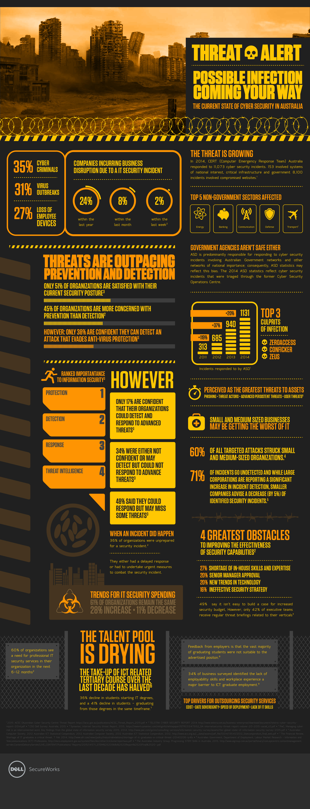

<!DOCTYPE html><html lang="en" id="top"><head><meta charset="UTF-8"/>
<meta name="viewport" content="width=device-width, initial-scale=1.0">
<meta http-equiv="X-UA-Compatible" content="IE=edge"/><title>Chris Norton: Designer</title><link rel="preconnect" href="https://fonts.googleapis.com">
<link rel="preconnect" href="https://fonts.gstatic.com" crossorigin><!--link(href='https://fonts.googleapis.com/css2?family=Open+Sans:wght@400;700&family=Source+Sans+3&display=swap', rel='stylesheet')--><link href="https://fonts.googleapis.com/css2?family=Arimo:ital,wght@0,400..700;1,400..700&amp;family=Source+Sans+3&amp;display=swap&amp;display=swap" rel="stylesheet"/><link rel="stylesheet" href="https://cdnjs.Cloudflare.com/ajax/libs/font-awesome/4.7.0/css/font-awesome.min.css"/><link rel="stylesheet" href="styles/styles-2025.css"/><script src="js/polyfill.min.js"></script></head></html><body><div class="wrapper bg-light-1"><div class="page"><header><h1>Christopher Norton</h1><nav><a href="index.html">Home</a><a href="index.html#projects">Projects</a><a href="#contactForm">Contact</a><a class="linkedin" href="https://www.linkedin.com/in/christopher-p-norton/" target="_blank"></a></nav></header><section class="bg-dark-3"><div class="content"><div class="page-nav top"><a class="back" href="index.html#projects"><svg width="24" height="24" viewBox="0 0 24 24" fill="none" xmlns="http://www.w3.org/2000/svg">
<path d="M20 18V20H13.5C9.91 20 7 17.09 7 13.5V7.83L3.91 10.92L2.5 9.5L8 4L13.5 9.5L12.09 10.91L9 7.83V13.5C9 16 11 18 13.5 18H20Z" fill="white"/>
</svg>Projects</a></div><h2 class="overline"> Dell</h2><p class="overline">Dell SecureWorks Cyber Security Infographic (Australia)</p><div class="tags"><div class="tag uxr">UXR</div><div class="tag vis">Visual</div></div><h3 style="color:#f2c92b;">Impact</h3><p>Helped the business turn a complicated cyber security report into a package people actually wanted to read through infographics. These became a bit of a collectible within the company. I worked on few of these themed around TRON, The Walking Dead, and True Detectives. The first TRON project was originally budgeted as a one-off, dynamic calculator project living on their website, but the additional posters went over so well they ordered more infographics alongside the calculator.</p><h6 style="color:#e89a23;">Sample Initial Questions</h6><p>Design always depends on context. Before starting on any design I'm always looking to understand what the solution is supposed to achieve and for who and under what constraints for both the business and the user.</p><ul class="checkmark-list"><li>What problem does this solve or what result are we aiming for?</li><li>Who is the audience?</li><li>When and where are they using our solution?</li><li>What facts and behaviors will likely affect the solution needed?</li><li>Do we need to validate any data?</li><li>How will we know it worked/how can it be measured?</li><li>What's the timeline to production?</li></ul><h4 style="color:#f2c92b;">Who (Which problems and for who)</h4><p>I did some initial needs gathering found the team at Dell was really open to any additional ideas that might get their own clients to read their report. Maybe something that would catch attention and get them interested in opening the report in the first place?</p><h4 style="color:#f2c92b;">Where/When</h4><p>The full pdf report could be downloaded anywhere but probably in their office on their pc</p><h4 style="color:#f2c92b;">What (Solutions)</h4><h6 style="color:#e89a23;">Solution 1: Calculator (killed)</h6><p>This project originally came across my desk as a bare bones web calculator with some graphing functionality to show off some of different data points. So some simple HTML/CSS and some sort of charting plugin.</p><h6 style="color:#e89a23;">Solution 2: Themed infographic</h6><p>During the kickoff meeting things changed drastically and there was a surprising amount of flexibility in hearing how to get people interested in downloading their report at various touch-points. When I suggested a themed infographic as a teaseer they really latched onto that and we didn't have to do any prioritizing between solutions. I sent over a few header options but there really wasn't a lot changes back and forth.</p><h4 style="color:#f2c92b;">How (to measure success)</h4><p>I was told these projects went over extremely well, especially internally although I never got any stats back on exactly how many posters were sent out. Tracking how many people also downloaded the full report would also be a great metric.</p></div><p style="margin-top:128px; margin-bottom:128px;"></p><div class="page-nav bottom"><a class="back" href="index.html#projects"><svg width="24" height="24" viewBox="0 0 24 24" fill="none" xmlns="http://www.w3.org/2000/svg">
<path d="M20 18V20H13.5C9.91 20 7 17.09 7 13.5V7.83L3.91 10.92L2.5 9.5L8 4L13.5 9.5L12.09 10.91L9 7.83V13.5C9 16 11 18 13.5 18H20Z" fill="white"/>
</svg>Projects</a></div></section></div></div><footer class="bg-light-4"><div class="about-me"><h6>Christopher Norton</h6><p>Senior designer with experience in UX/UI launching 26 new products and countless features for web and mobile in the last 10 years. Able to lead, execute, analyze, and iterate on products from start to finish for cross-functional and regionally diverse teams. Strong problem-solving skills and a design thinker with a proven track record in enterprise-level B2B, B2C and SaaS products for clients such as: <strong>Boeing</strong>, <strong>Dell</strong>, <strong>John Deere</strong>, <strong>Booz Allen</strong>, <strong>Animal Planet</strong>, <strong>The Learning Channel</strong>, and others.</p><small><strong>Hidden Gem</strong>: I also developed this site from scratch using HTML5, CSS3, and JS using Node.js to run a local preview server which compiles and minifies Sass on the fly with Autoprefixer, CSS Lint and ES Lint. Version control is run through Github pages. I have wide a wide range of skills enabling me to bridge the communication gap between business stakeholders, designers and engineering teams.</small></div><div class="social-links"><h4 style="color: #345f7d">Site</h4><a href="index.html">Home</a><a href="index.html#projects">Projects</a><a href="https://www.linkedin.com/in/christopher-p-norton/" target="_blank">LinkedIn</a><a href="downloads/chris_norton_resume_ux_designer_2025-3.pdf" target="_blank">Resume</a></div><form method="post" name="contactForm" id="contactForm"><h6>Contact Me</h6><div class="form-group"><label for="fullName">Full Name</label><input name="fullName" id="fullName" type="text"/></div><div class="form-group"><label for="email">Email</label><input name="email" id="email" type="text"/></div><div class="form-group"><label for="message">Message</label><textarea name="message" id="message" rows="7"></textarea></div><div class="form-group"><button type="submit" id="submitContact">Send</button></div><div class="form-group"><small id="formStatus">Your message has been sent.</small></div></form></footer><script src="js/contact.js"></script></body>